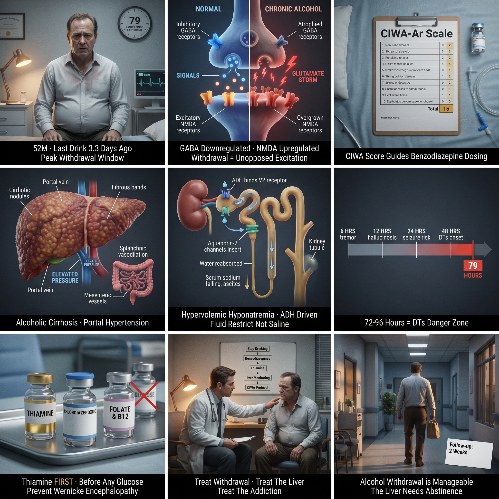

· 2026-07-23


31-year-old male, business executive · 2026-07-23 | **Score:** 84.9% (Avg 81.7%) | **Patient:** 31-year-old male, business executive

Male, electric facial pain V2/V3, triggered by light touch · 2026-07-27 | **Score:** 82.5% (Avg 80.9%) | **Patient:** Male, electric facial pain V2/V3, triggered by light touch


· 2026-07-26


Chronic diarrhea, abdominal discomfort, Office setting · 2026-07-27 | **Score:** 79.53% | **Diagnosis:** Irritable Bowel Syndrome


26-year-old woman · 2026-07-23 | **Score:** 76.4% (Avg 86.9%) | **Patient:** 26-year-old woman


28F, 32 weeks pregnant · 2026-07-23 | **Score:** 76.0% (Avg 76.9%) | **Patient:** 28F, 32 weeks pregnant


30-year-old male, forest ranger · 2026-07-23 | **Score:** 73.3% | **Patient:** 30-year-old male, forest ranger


52M, chronic alcoholism, fatigue, abdominal distention, memory trouble, lost appetite, last drink 3.3 days ago · 2026-07-27 | **Score:** 72.49% (Avg 91.8%) | **Diagnosis:** Alcohol Withdrawal

· 2026-07-26

Recent MI survivor, now on DAPT + beta-blocker + statin · 2026-07-25 | **Score:** 68.33% (Avg 66.2%) | **Patient:** Recent MI survivor, now on DAPT + beta-blocker + statin


62M professor, 30 pack-years, EF 35% · 2026-07-25 | **Score:** 64.91% (Avg 70.2%) | **Patient:** 62M professor, 30 pack-years, EF 35%


· 2026-07-25 | **Score:** 64.12% (Avg 79.8%) | **Diagnosis:** Type A Aortic Dissection


35-year-old male, accountant · 2026-07-23 | **Score:** 63.8% (Avg 62.1%) | **Patient:** 35-year-old male, accountant


· 2026-07-26


2-year-old boy · 2026-07-23 | **Score:** 62.14% (Avg 69.9%) | **Patient:** 2-year-old boy


Pediatric, found submersed, pulseless, apneic, hypothermic · July 27, 2026


45-year-old female, fever, malaise, substance use history · 2026-07-27 | **Score:** 60.33% | **Diagnosis:** Infective Endocarditis


· 2026-07-25 | **Score:** 60.33% (Avg 86.9%) | **Setting:** Office


65-year-old woman · 2026-07-25 | **Score:** 54.96% (Avg 77.8%) | **Patient:** 65-year-old woman


3-year-old boy, failure to thrive, oily stools, Pseudomonas pneumonia · 2026-07-25 | **Score:** 52.98% (Avg 66.2%) | **Patient:** 3-year-old boy, failure to thrive, oily stools, Pseudomonas pneumonia


· 2026-07-23


65-year-old man · 2026-07-25 | **Score:** 45.01% (Avg 64.7%) | **Patient:** 65-year-old man


50-year-old male · 2026-07-23 | **Score:** 44.8% (Avg 68.2%) | **Patient:** 50-year-old male


· 2026-07-26


71M, constipation, nausea, fatigue · 2026-07-27 | **Score:** 41.67% (Avg 75.7%) | **Patient:** 71M, constipation, nausea, fatigue


· 2026-07-26

Female, IV drug user · Fever, chills, malaise · New systolic murmur · Janeway lesions · 2026-07-27 | **Score:** 39.11% (Avg 77.6%) | **Diagnosis:** Infective Endocarditis


· 2026-07-26


33-year-old woman · 2026-07-23 | **Score:** 31.99% (Avg 81.3%) | **Patient:** 33-year-old woman


· 2026-07-23


Postmenopausal woman · Foot pain after tripping · Fracture from minimal trauma · 2026-07-27 | **Score:** 15.3% (Avg 62.3%) | **Diagnosis:** Osteoporosis


45M music teacher, 3 years of diarrhea · 2026-07-27 | **Score:** 14.77% (Avg 41.3%) | **Patient:** 45M music teacher, 3 years of diarrhea


· 2026-07-26